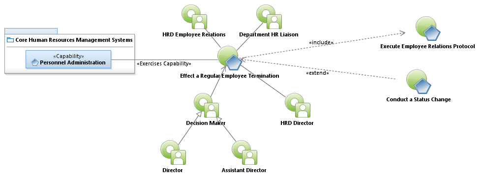
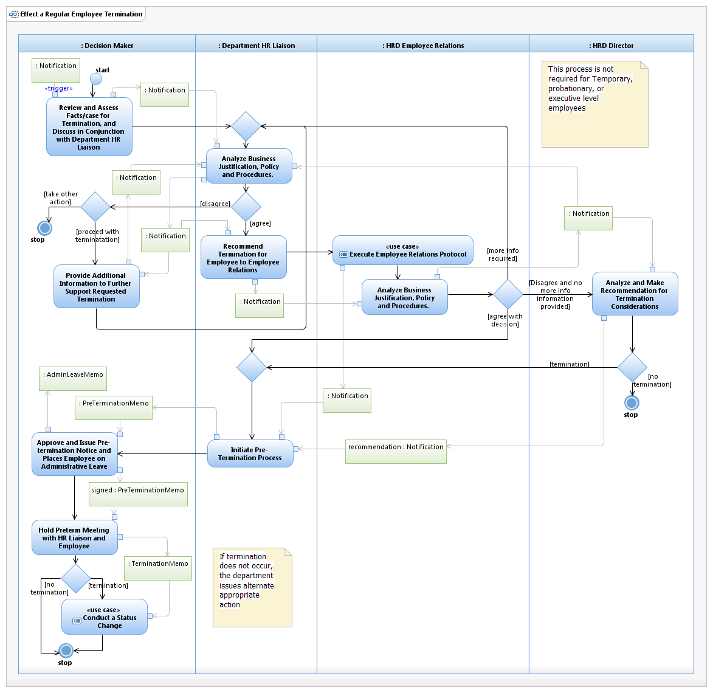

Use Case Model: Effect a Regular Employee Termination
Architect: Aaron Brown, IT Enterprise Architect
Date Last Modified: 02/20/2013
User Review: Sharon Huckabee, Jeff Burton
Date: 02/20/2013
Assessment and Determination of a Regular Employee's Termination in accordance with City Policies and procedures.
Follow link to Role Definitions

Use Case Model: Effect a Regular Employee Termination

Activity Model: Effect a Regular Employee Termination
Activity Documentation
| Activity | Documentation |
|---|---|
| Analyze and Make Recommendation for Termination Considerations | This may require ACM review. The HRD Director will discuss with Decision Makers, ACMs, and other stakeholders to make a final recommendation. However, the decision is always the "Decision Makers" to finally make. |